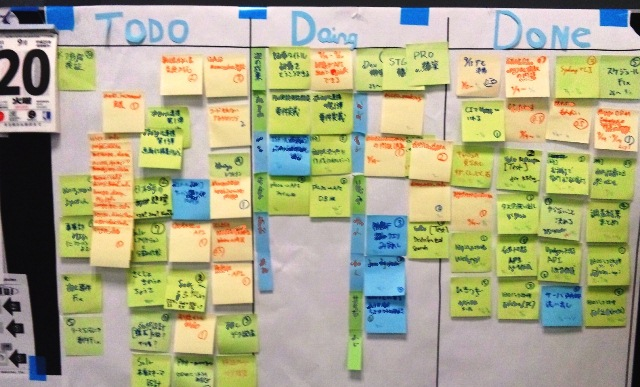

Created by Motohashi Yusuke
チーム開発の話をします
| key | value |
|---|---|
| 名前 | 本橋 佑介(もとはし ゆうすけ) |
| 所属 | Technology Media Lab. |
| 好きな色 | あか |
よく使われるtool
必要なのは一覧視できること
ここで大事なのはほんとうにちょっと
かんばん
やること、やっていること、やったことが一目瞭然
まとめると…
使い慣れてなければ付箋で看板が鉄板
正規化を出来るだけやると急な仕様変更が楽だったりする
外部データを利用する場合
※データはあっても取り回し方に時間がかかったりするので注意
※サンプルで魅力が伝わるものなのかデータがないと成立しないものなのかはちゃんと判断して時間を使おう
バージョン管理
GitHub
使ったこと無くてもGUIツールがあるので使ってしまおう
チャットツール
口頭のほうがコミュニケーションは早い
が、大体言ったことは覚えているが聞いたことは忘れる
チャットを積極的にログ代わりに使おう
チームが全員「面白い」と思うことは難しいけど、チームが全員「これはすごい」と思うことは可能
「課題」を「解決する」この手法って「すごい」、の方向性だけきっちり合わせて、振り返らずに先に進めよう
ちなみに全員で居る時に話を混ぜ返すのはあんまり楽しい事じゃないけど、一人で居る時に基本に立ち返るのは大事なのでそのへん上手くやろう
I never said it would be easy,
we only said it would be worth it.
要らないものは作らない
そんなものは今すぐ捨てよう
「コミュニケーションはたくさんのソースコードと少しのコメント、そしてこころばかりのreaction☝🙅👍があればいい」って偉い人が言ってた